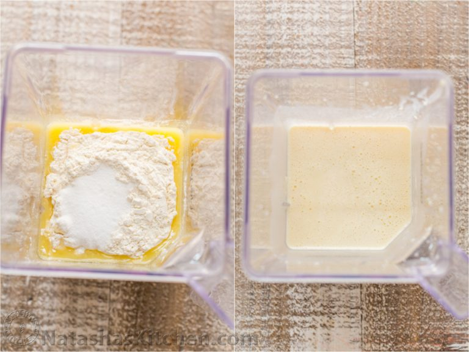
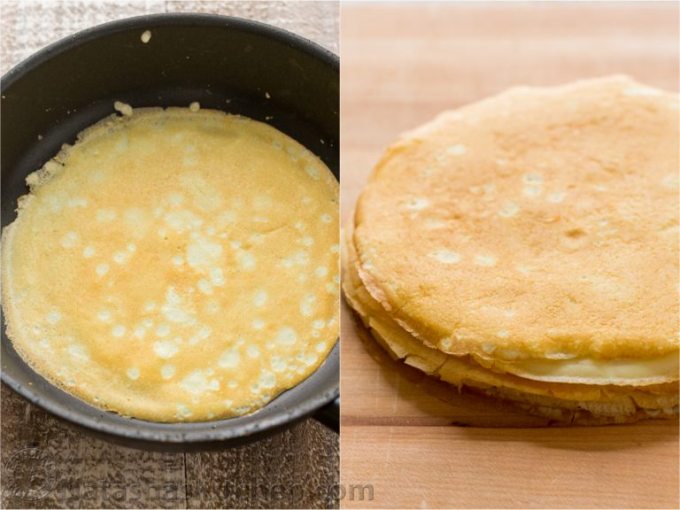

1. In the bowl of a blender, add crepe ingredients in the order they are listed: 1/2 cup warm water, 1 cup milk, 4 eggs, 4 Tbsp melted butter, 1 cup flour, 2 Tbsp sugar and a pinch of salt. Blend until well combined, scraping down the blender with spatula if needed.
2. Heat a medium (9-inch) non-stick pan over medium heat. Add a tiny dot of butter and spread it around with spatula to lightly coat. Once butter is hot, add about 3 Tbsp of batter, or enough to lightly coat the bottom of the pan, swirling the skillet as you add the batter to evenly coat the bottom of pan. Sauté about 30 seconds per side or until lightly golden then flip using thin spatula and sauté another 30 seconds or until second side is golden. Flip crepe out onto a clean surface such as a cutting board and let layers cool to room temp before stacking.
